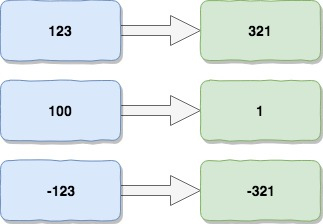

整数反转 Reverse Integer
题目
给出一个 32 位的有符号整数，你需要将这个整数中每位上的数字进行反转。
以下为详细说明：
Given a 32-bit signed integer, reverse digits of an integer.
Example 1:
Input: 123
Output: 321
Example 2:
Input: -123
Output: -321
Example 3:
Input: 120
Output: 21
Note:
Assume we are dealing with an environment which could only store integers within the 32-bit signed integer range: [−2^31, 2^31 − 1]. For the purpose of this problem, assume that your function returns 0 when the reversed integer overflows.
思路&题解

算法题中有很多都是做一些反转处理，本题要求对32位有符号整型数字反转，符号不必处理。
思路为从低位开始，按位提取数字，并赋值给中间量，赋值过程从高位开始。 整个算法的关键点是，对整型溢出的预判逻辑，虽然算法核心逻辑清晰，如果忽略了溢出的限制，此题是解答不成功的。

public class Solution {
public int reverse(int x) {
int min = -1<<31;
int max = -min - 1;
int result = 0;
while(x != 0) {
// 取余数，相当于获取低位数值
int rightPart = x%10;
// 易错点：除以10，相当于移动最低位,
x /= 10;
// 易错点：此处可能会溢出
//result = result * 10 + rightPart;
if (result > max/10 || (result == max/10 && rightPart > 7)) {
return 0;
}
if (result < min/10 || (result == min/10 && rightPart < -8)) {
return 0;
}
result = result * 10 + rightPart;
}
return result;
}
}
知识点分析
梳理一下这题的几个知识点。
- 逐位处理
对一个整型，按位处理，一种方式是可以转换为字符串，从而根据索引处理每一位的数字。
另一种就是直接进行数值运算，整型的基数是10，因此可以从进位规则下手。 除以10得到的余数就是个位数的数值，计算完个位数后，我们把原数值去除各位后，得到新的数值，再次循环计算各位数值；整个过程即是按位处理。
tmp = x%10
- 位增减处理
按位处理有一个步骤，就是讲原数字去除个位，得到新的数值。这里，注意严谨，不要犯常识错误，比如通过减法，原数字减去个位数得到新数值，当个位数是0时得不到正确的结果，比如10-0=10；正确的做法是除以是10，去结果即可。
x /= 10
- 整型溢出原理
本题中，整型是32位数字，提示信息中已经告诉我们最新小值是-2^31，最大值是2^31-1。
所谓溢出，笔者的理解是：计算机本来用32位的变量来表示的这个整型，但是接受到的数值超出了32位，位置不够，放不下了，那么就产生了溢出，溢出的具体处理可能各异。比较常见的有舍弃高位，假设接受位数是3，那么针对二进制的1000已经超出以为，舍弃高位后变成二进制的000。也有些是直接报错异常的。
那么在本题中，判断溢出的操作有两个if逻辑块，为甚么会出现7和-8呢？
这个问题也困扰了我好一会儿。我们回归到溢出的语句分析一下：
// 易错点：此处可能会溢出
result = result * 10 + rightPart;
- 如果上述语句溢出，由于rightPart是取值为[0,9],不可能溢出，因此溢出的一定是
result * 10 - 如果
result * 10溢出，则result * 10 >= max或者result * 10 =< min，等于不一定会溢出，需要结合rightPart的取值；
情况一：
- 如果
result * 10 >= max，则result >= max/10 - 若
result > max/10时，一定是溢出的 result == max/10时，需要结合rightPart，即两者只和如果大于max就溢出- 因为max的个位数是7，所以
rightPart > 7时溢出 - 整合起来就是第一个if的逻辑块
情况二：
- 如果
result * 10 <= min，则result <= min/10 - 若
result < min/10时，一定是溢出的 result == min/10时，需要结合rightPart，即两者只和如果小于min就溢出- 因为min的个位数是8，所以
rightPart < -8时溢出 - 整合起来就是第二个if的逻辑块
如何知道max和min的个位数是多少？
这个确实可能记不住，记不住完全没关系，可以通过代码输出，直接用动态计算替代即可:
System.out.println("max = " + max + "，" + Integer.toBinaryString(max) + ", "+ max%10);
System.out.println("min = " + min + "，" + Integer.toBinaryString(min) +"，"+min%10);
输出
max = 2147483647，1111111111111111111111111111111, 7
min = -2147483648，10000000000000000000000000000000，-8